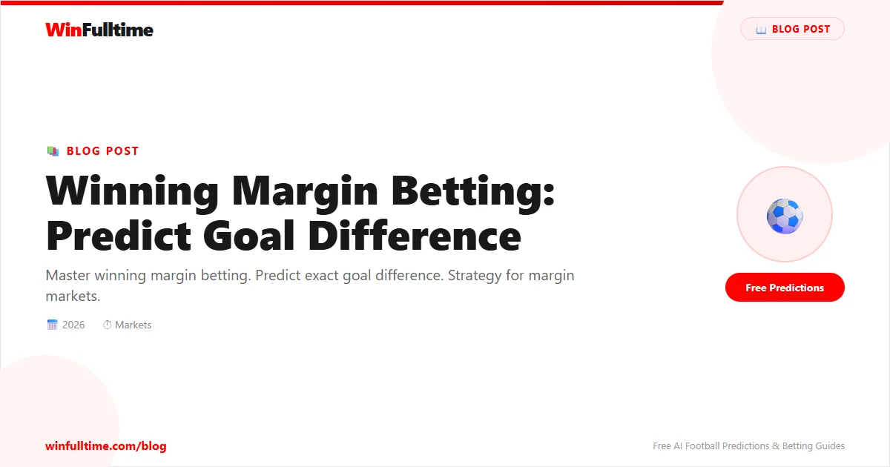

Winning margin betting is one of the most lucrative yet underutilised markets in football. Instead of simply picking a winner, you predict exactly how many goals they'll win by - 1, 2, 3, or 4+. This precision dramatically boosts odds while still being more predictable than exact score betting.
A well-researched winning margin bet can offer 2-3x the odds of a standard 1X2 bet with only a modest decrease in probability. When you understand the factors that drive goal margins, this becomes one of the most consistently profitable markets available.
Winning margin markets typically offer the following options for each team:
| Margin | Description | Example Scorelines | Typical Odds |
|---|---|---|---|
| Win by 1 goal | The team wins by a single goal | 1-0, 2-1, 3-2 | 2.50 - 4.50 |
| Win by 2 goals | The team wins by exactly 2 goals | 2-0, 3-1, 4-2 | 3.50 - 6.00 |
| Win by 3+ goals | The team wins by 3 or more | 3-0, 4-1, 5-0 | 5.00 - 12.00 |
| Win by 4+ goals | Rare, higher odds | 4-0, 5-1, 6-0 | 10.00 - 25.00 |
| Any other result | Covers draw + other team win | Draw or opponent win | 1.30 - 1.60 |
Best when: Two evenly matched teams, the favourite is only marginally better, or the underdog is defensively solid. Approximately 40-45% of all home wins are by a single goal.
Target matches: Mid-table clashes, local derbies, matches involving defensively organised teams (Atletico Madrid, Juventus-style).
Value check: If the favourite is priced at 2.50 to win, winning by 1 should be around 5.00-6.00. If it's above 6.00, there's potential value.
Best when: A solid favourite faces a mid-tier opponent, the favourite has a strong home record, or the opponent tends to lose by 2 goals to stronger sides.
Target matches: Top-4 vs bottom-10 at home, strong home teams against mid-table away sides.
Win by 2 occurs about 20-25% of the time when the favourite wins. The odds are often generous because bettors gravitate toward"win by 1" (too short) and"win by 3+" (too risky).
Best when: Elite team vs relegation candidate, massive xG gap, the underdog has a key defender injured, or the favourite needs to improve goal difference.
Target matches: Manchester City vs bottom-5 at home, Bayern Munich against any promoted side, PSG vs Ligue 1 minnows.
Win by 3+ occurs in 10-15% of home wins but can spike to 30%+ in extreme mismatches. Understanding the Big Gap theory (detailed below) is key to playing this margin.
Expected goals (xG) difference is the most powerful tool for predicting winning margins. The relationship between xG gap and actual margin is strong and predictable.
| xG Difference (Team A - Team B) | Most Likely Margin | 3+ Goal Probability |
|---|---|---|
| 0.0 - 0.3 | Draw or 1-goal win | 5% |
| 0.3 - 0.7 | 1-goal win | 8% |
| 0.7 - 1.2 | 1 or 2-goal win | 15% |
| 1.2 - 1.8 | 2-goal win | 22% |
| 1.8 - 2.5 | 2 or 3-goal win | 35% |
| 2.5+ | 3+ goal win | 50%+ |
Use Understat for team xG data, FBref for historical xG breakdowns, and WhoScored for per-match statistics. Calculate the xG difference over each team's last 10 matches for the most reliable signal.
Manchester City vs Southampton
The Big Gap Theory posits that when there's a significant quality gap between two teams, the likelihood of a 3+ goal margin increases exponentially - not linearly. This occurs because:
When an elite team scores early against a weak opponent, the underdog's discipline collapses. They must chase the game, leaving space, which leads to more goals. The 2-0 lead becomes 3-0, then 4-0.
When leading comfortably, elite teams can bring on fresh attacking substitutes. Meanwhile, the underdog's substitutes are typically weaker, widening the gap further in the final 30 minutes.
Teams expected to be relegated often have multiple matches where they lose by 3+ goals. In the Premier League, bottom-3 teams lose by 3+ goals approximately 25-30% of the time against top-6 opposition.
| Quality Gap | Example Match | 3+ Goal Win % |
|---|---|---|
| Elite vs Relegation candidate | Man City vs Norwich | 35% |
| Top-4 vs Bottom-6 | Liverpool vs Forest | 22% |
| Top-6 vs Mid-table | Arsenal vs Brighton | 12% |
| Mid-table vs Mid-table | Villa vs Brentford | 8% |
| Mid-table vs Relegation | Wolves vs Luton | 15% |
Each league has a distinct margin profile based on its typical goal totals and competitive balance:
| League | Avg Margin of Home Win | 1-Goal Win % | 2-Goal Win % | 3+ Goal Win % |
|---|---|---|---|---|
| Premier League | 1.7 | 45% | 25% | 15% |
| Bundesliga | 2.1 | 35% | 28% | 22% |
| Serie A | 1.5 | 52% | 22% | 10% |
| La Liga | 1.6 | 48% | 24% | 12% |
| Ligue 1 | 1.4 | 55% | 20% | 9% |
| Eredivisie | 2.3 | 30% | 28% | 28% |
For Bundesliga and Eredivisie, focus on 2-goal and 3+ goal margins. For Serie A, Ligue 1, and the Championship, focus on 1-goal margins. The Premier League and La Liga offer more balanced opportunities across all margins.
Individual teams develop distinct margin patterns that can be exploited. Track these metrics for each team you follow:
"Home win by 2 goals + BTTS No" covers 2-0, 3-0, 3-1 scorelines where the opponent doesn't score. This is an excellent combination when a strong favourite has a clean sheet record against weaker opponents.
"Home win by 3+ goals + Home win half-time" provides much better odds than betting the margin alone. Use this when you expect the favourite to dominate from the start.
Combining"Home win by 2 goals" with"Over 2.5 goals" narrows possible scorelines to 3-1, 4-2 etc. This works well with high-scoring teams like Bayern Munich or Manchester City.
If the favourite scores in the first 15 minutes, the"win by 3+" margin odds improve significantly. The pre-match odds on 3+ may have been 6.00, but after a 1-0 lead, they might drop to 4.00. If you pre-assessed 3+ as likely, this is still value.
After a red card to the underdog, the"win by 3+" margin becomes significantly more likely. The odds adjust, but typically not enough. If the favourite was already leading, the combination is extremely powerful.
If the favourite leads 1-0 at half-time, check the margin odds:
If you've backed"win by 2" and the score is 2-0 in the 80th minute, you can hedge by backing"win by 3+" to cover the possibility of a late third goal. This locks in profit or reduces loss depending on the odds.
Pre-match assessment:
Market odds:
Value assessment:
Recommendation: Back Bayern win by 3+ goals at 5.50. Also consider"Bayern win by 3+ + Over 3.5 goals" for additional odds boost.
Result example: Bayern 4-0 Cologne
Winning margin is the goal difference by which a team wins. Options typically include win by 1, win by 2, win by 3+, and sometimes win by 4+ or any other result.
Win by 1 goal is the most common, accounting for approximately 40-50% of all wins depending on the league. Serie A and Ligue 1 have the highest percentage of 1-goal wins.
The Bundesliga and Eredivisie offer the best opportunities for 2-goal and 3+ goal margins. Serie A and the Championship are better for 1-goal margins.
xG difference is the single best predictor of margin. A large xG gap (1.8+) strongly correlates with 3+ goal victories. Use Understat for team xG data.
Yes. In-play margin betting is particularly valuable after early goals, red cards, or at half-time when odds haven't fully adjusted to the match state.
The Big Gap theory states that when two teams are far apart in quality, the probability of a 3+ goal win increases exponentially due to confidence cascades, substitution effects, and defensive collapses by the weaker side.
Compare the implied probability from odds to the true probability from historical data. If odds of 5.00 imply 20% but true probability is 30%, you have +50% expected value.
Yes, combining margins with BTTS, half-time result, or total goals can significantly boost odds while maintaining reasonable probability, provided both conditions are independently likely.
Manchester City, Bayern Munich, PSG, Ajax, and Barcelona at home against weak opposition are historically the strongest 3+ margin candidates.
A minimum of 20 home games for home margin analysis and 20 away games for away margin analysis. The larger the window, the more reliable the pattern.
Apply these margin strategies to today's matches and find better odds:
Generate optimized accumulator combinations from today's AI-powered predictions. Set your target odds and get instant ticket suggestions.
Free Ticket Builder →